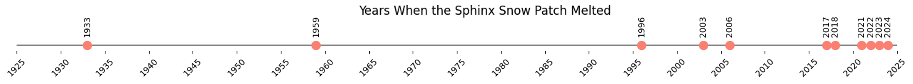

Blogs
This page is a repository for my blog posts.
Blogging provides an informal platform through which to share my research.
Expect mountains, snow, satellites, and maybe a few personal opinions on academia, climate change, and life.
All views are my own.
February 2023
Blog #1: Chasing snow patches in the Cairngorms
It might come as a surprise, but even in the mild climate of Scotland, snow manages to endure year-round in certain sheltered mountain locations. In fact, until recently, some highland corries would house perennial snow patches for many decades without seeing them melt. The fine balance between preferential snow deposition in winter and sheltering in summer makes predicting the distribution of these snow patches a rigorous test for the kind of physically based snow models used in climate projection and impacts studies. This is the basis of my PhD research.
This summer, my fieldwork took me to Coire Cas on Cairngorm Mountain, where I aimed to map the areal extent and measure the reflective properties of some persistent snow patches. My tool for the job was a DJI M210 drone equipped with a multispectral sensor matched to the Sentinel-2 satellite sensor.
Conducting multispectral drone surveys requires two things notoriously scarce in the Scottish Highlands: low winds and clear skies. Moreover, this summer was dubbed ‘Scotland’s worst since 2015’, limiting us to a single day of drone surveys. The scarcity of cloud-free days this season is visualised in Figure 1 below.

Despite the inclement weather, we did manage to retrieve some spectral measurements of the late-lying snow on the 24th June (Figure 2 shows one of the short-lived sunny intervals on the day). These data will help improve the snow mapping algorithms which, in turn, feed into research and contribute to discussions concerning biodiversity, water resources, and risk management in cold and mountainous regions.

In addition to my fieldwork, this summer I made my first ‘pilgrimage’ to a remote North-East facing corrie on Braeriach mountain called Garbh Choire Mòr. This location is considered to be the snowiest place in the UK and houses the famous Sphinx snow patch (see Figure 3).
The Sphinx has made it to popular news platforms numerous times over the past few years, and this year marks an unprecedented fourth consecutive year of its disappearance. Figure 4 shows a timeline marking the years that the Sphinx has disappeared; the trend seen here mirrors the significant impacts of climate change on Scotland’s winter conditions.
Current projections suggest a stark future with ‘little to no snow by the 2080s’ — a disheartening forecast for chionophiles like myself.

